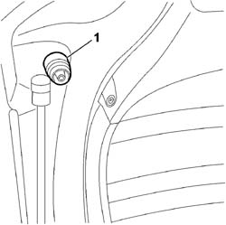
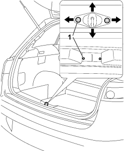

7015A10 TAILGATE - ADJUST STRIKER AND ADAPT SEAL IF NECESSARY
- Path
- Procedures > 70 FITTINGS > 7015 TAILGATE/FLAP > 7015A TAILGATE ASSEMBLY > 7015A10 TAILGATE - ADJUST STRIKER AND ADAPT SEAL IF NECESSARY
- Kind
- repair procedure (removal / refitting; the operation number is the code)
- Applies to
- all engines; all production periods
- Interactive page
- https://sloeber94.github.io/elrnDB-fCrm/en/#/194000942
Applies to: all engines; all production periods
- Open the tailgate.
- Check that the tailgate seal is in place around the entire perimeter.
Adjustment
1. If necessary, adjust the buffers.

Applies to: all engines; all production periods
- If necessary, adjust the striker position as described below.
1. Loosen the bolts that are accessible through the gaps in the luggage compartment moulding. Adjust the position of the striker throught the slotted holes.

Applies to: all engines; all production periods
- Check that the striker is matched perfectly with the lock and that they are aligned with the tailgate closed.
- When the adjustment has been completed, tighten the bolts fixing the tailgate lock striker to torque.